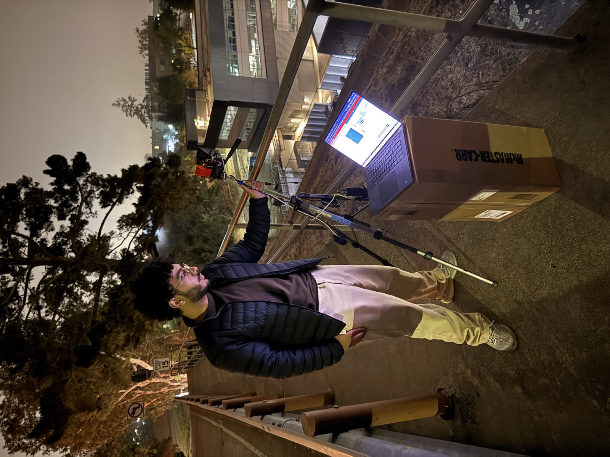
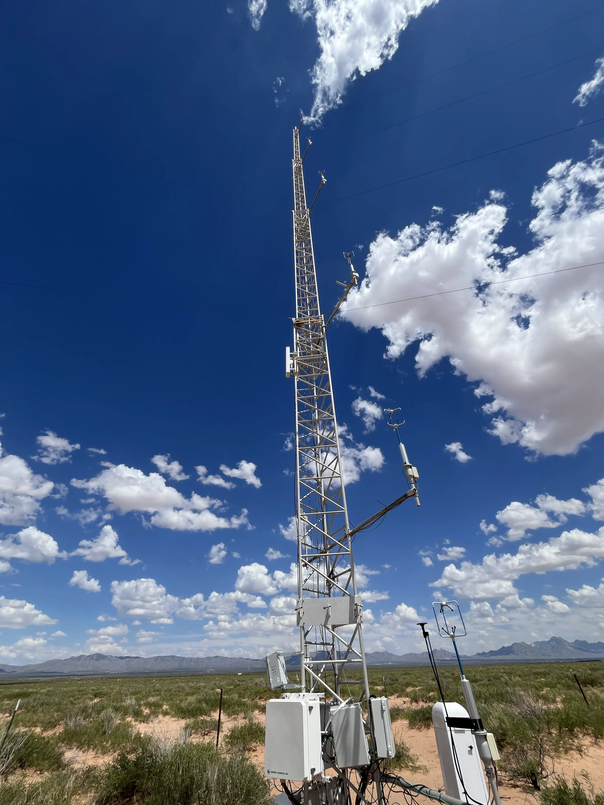
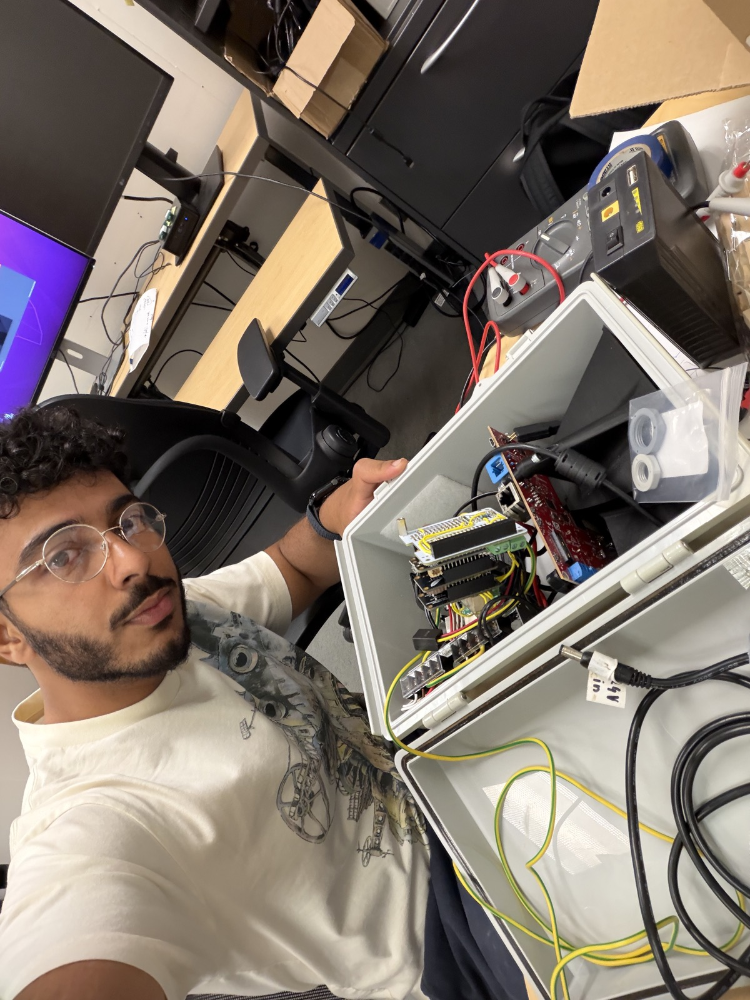

I study EECS at Berkeley and build things that connect hardware, software, and the world outside the lab. Lately, that means helping automotive radar see the atmosphere.
Currently researching at Lawrence Berkeley National Laboratory37.87° N 122.27° W

A LITTLE LESS THEORY. A LITTLE MORE TESTING. Me, a radar, and a laptop.BERKELEY, CA
Always curious. HAPPIEST WHEN BUILDING.
EMBEDDED SYSTEMS＋RF & SIGNAL PROCESSING＋HARDWARE＋SOFTWARE AT SCALE
SELECTED WORK / 01
A few things I’ve been building.
From a radar in the desert to a circuit on the workbench—here’s where my curiosity has taken me so far.

FIELD DEPLOYMENT · JORNADA EXPERIMENTAL RANGE
01 / RESEARCH · BERKELEY LAB
Making automotive radar see the atmosphere.
Adapting TI’s 77–81 GHz mmWave radar for atmospheric boundary-layer observations through embedded control, DSP configuration, and weak-target signal processing.
Python / NumPyC++Embedded LinuxTI AWR2944
~5.3 Waverage system power¹
1.37 GBdata collected per day¹
DC
∿
ACH–BRIDGE / 60 Hz
02 / POWER ELECTRONICS · 2025
DC-to-AC inverter
A single-phase H-bridge inverter with discrete BJT gate drivers and microcontroller-generated PWM.
MOSFETsGate drivers20 V · 0.5 A AC
0101＋00114–BIT ARITHMETIC LOGIC UNIT
03 / DIGITAL DESIGN · 2024
Logic gates to an ALU
A 4-bit arithmetic logic unit built from fundamental gates, with subtraction, carry chaining, and status flags.
Digital logicTwo’s complement
INERTIAL ELECTROSTATIC CONFINEMENT
04 / IN PROGRESS · 2026
Exploring plasma confinement
An experimental IEC fusion device project, integrating a vacuum chamber, electrode geometry, and a dual-stage pumping system.
Vacuum systemsExperimental physics
BEYOND THE LAB / BYTES.IO
Engineering for real-world scale.
As co-founder of Bytes.io, I built software and operational systems that turned fragmented restaurant data into a platform for growth.
Undergraduate Research Assistant / Electrical Engineer Intern
Developing embedded Linux software, radar control, and signal processing for a distributed atmospheric sensing network. Built remote deployment platforms with scheduled power control, UART configuration, and watchdog recovery.
Research assistant: Mar–Jun & Aug 2026–present · Full-time intern: Jan–Mar & Jun–Aug 2026 Principal investigator: Stijn Wielandt
MAY 2021 — APR 2025
Bytes.io
Co-founder
Built AI-assisted menu creation, cloud ETL pipelines, reporting tools, and financial reconciliation systems. Developed the service model supporting 1,000+ storefront launches across 180+ locations in California and New York.
Coursework includes computer architecture, circuits, electromagnetics, data structures, and discrete mathematics & probability. Verilog coursework in progress.

A GOOD DAY AT THE WORKBENCH.
HOW I WORK / 03
The person behind the projects.
I’m drawn to the moment when an idea becomes something you can actually test. A signal on a screen, an inverter producing AC, a radar collecting data outside—that’s the part I love.
Before Berkeley Lab, I co-founded Bytes.io and learned to build for people who depended on our tools. Now I’m bringing that same practical mindset to research. Away from a screen or workbench, you’ll find me hiking or making time for fitness.